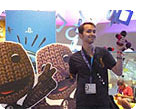
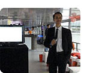
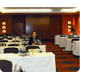
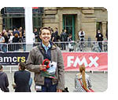

LATEST NEWS
My Visit of the world's largest trade fair and event highlight for interactive games and entertainment.
(08.21.2012)
Award ceremony of the European Games Award 2012
in Cologne.
(08.14.2012)
Participation in the event of the FFF Bayern and the firm
SKW Schwarz.
(06.15.2012)
Latest News
gamescom 2012
The month of August was dedicated to the gamescom 2012 in Cologne.
For me it was the 3rd time to visit the gamescom. For 5 days current and upcoming game titles were tested and the player community was met live. Special attention was paid to the trade day to get in touch with game companies.
The panel »gamescom Jobs+Karriere« had some interesting talks.
(08.21.2012)
European Games Award 2012
On the eve of gamescom 2012 was the awarding of the European Games Award 2012 in Cologne.
The ship Pure Liner 1 was as a special venue. Once on the lower stage all prizes were awarded, the Pure-liner 1 took on her tour across the Rhine. The stage gave way to a dance floor with a DJ and the whole ship became a party zone.
(08.14.2012)
Update Games am Standort Bayern
I followed the invitation to »Update Games am Standort Bayern« in Munich of the FilmFernsehFonds Bayern and SKW Schwarz Rechtsanwälte.
In the Le MERIDIEN hotel were on the one hand successfully financed and produced games presented as showcases and on the other hand, an overview was given of the relevant legal issues to legal legends, the clarification of rights and the form of the relationship with end users and distributors.
(06.15.2012)
FMX und ITFS 2012
This year I participated at the FMX 2012
(Conference on Animation, Effects, Games and Transmedia) in Stuttgart again.
For the 4th Time for me there was a week of interesting lectures on upcoming projects from the media industry to hear.
At the end of the day the ITFS (International Animated Film Festival) had some brilliant short films to clear the head.
(05.09.2012)
Making Games Talents 2012
For the first time I participated in the Making Games Talents. On 28th of January I could speak directly to game companies, such as Chimera Entertainment and Ravensburger Digital.
Other game companies: Crytek, Sproing, Ravensburger Digital, ProSiebenSat.1 Games, Travian Games, Trollgames, Chimera Entertainment, CipSoft.
(01.28.2012)
Spoings House
The final prototype of the boardgame Spoings House is completed.
In the context of planned marketing strategies for a children series a game concept and various board game prototypes were made.
(01.24.2012)
History Scanners
The master project History Scanners should develop an application for mobile phones that uses RFID reader and tags.
Following the current trend of mini-applications, an interactive game was developed based on Geocaching Adventure(Game) elements.
(07.09.2011)